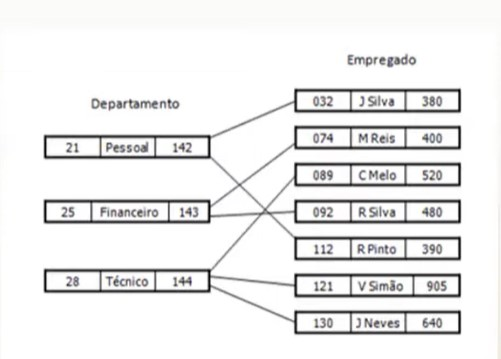
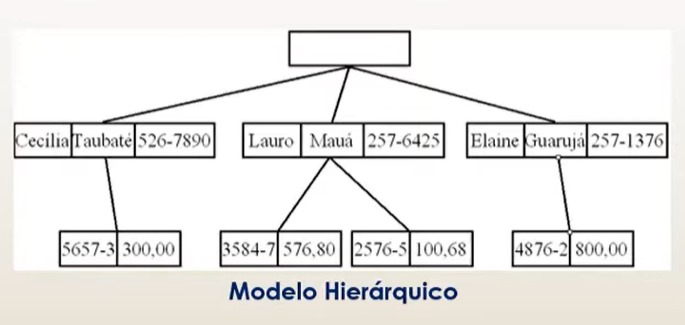
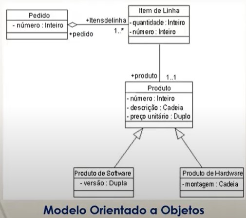
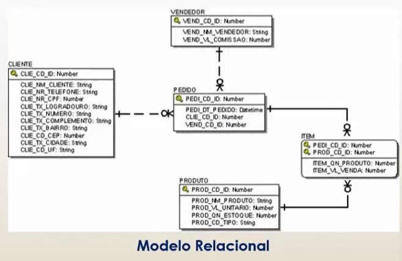
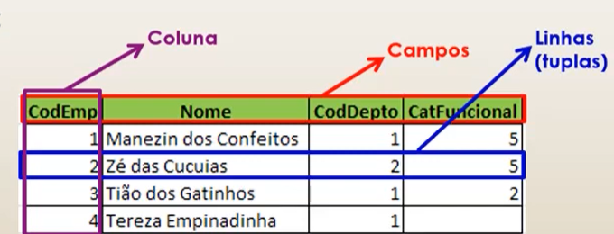

Modelo Lógico de BD
Depois de termos um modelo conceitual de dados definido,
a proxima etapa de um projeto de Banco de Dados é a
construção de um modelo lógico. O modelo lógico descreve
as estruturas que serão armazenadas no Banco de Dados,
ele representa graficamente os dados de uma maneira lógica.
A tecnica de modelagem de dados mais difundida é a
abordagem entidade-relacionamento, para construir
Diagramas de Entidade-Relacionamento (DER).
Existem vários modelos lógicos de Banco de Dados e o mais
difundido é o Modelo Relacional.
Modelo de Rede: ele é representado por um conjunto de registros,
e as relações são efetivadas por meio de ponteiros;
Representação grafica:

Modelo Hierárquico: similar ao moduloem rede, mas os registros
são armazenados numa estrutura de arvore;
Representação grafica:

Modelo Orientado a Objetos: nos leva a imaginar que os dados
são armazenados encima de estrururas de objetos, assim como
o nome sugére;
Representação grafica:

Modelo Relacional: utiliza um conjunto de tabelas que são
formadas por linhas e por colunas.
Representação grafica:

Modelo Relacional
Um banco de dados relacional é composto de tabelas, que
tabém são chamadas de relações, a terminologia tabela
é mais comum nos produtos comerciais e na prática.
Tabelas são o conjunto não ordenado de linhas
(também chamado de tuplas). Cada linha é composta por uma
série de campos (atributos), cada campo é identificado
por um nome, o conjunto de campos de todas as linhas
de uma tabela formam uma coluna.
Representação grafica:

Chaves:
Identifica linhas e relaciona tabelas em um Banco de Dados
Relacional.
Em um Banco de Dados Relacional, basicamente, existem 3
que devem ser considerados:
Chave Primária: Uma coluna (ou uma combinação delas)
cujos valores distinguem uma linha das demais dentro
de uma mesma tabela. Uma chave primária não pode conter
valores nulos e nem pode se repetir. Por exemplo: o CPF
de um individuo.
Chave Estrangeiras: Uma coluna (ou uma combinação de
colunas) cujos valores aparecem obrigatoriamente
na chave primária de uma tabela. Uma chave Estrangeira
permite a implementação dos relacionamentos entre
tabelas de um Banco de Dados Relacional.
Chave Candidata (ou Alternativa): Uma coluna (ou uma
xombinação de colunas) que é candidata a ser uma
chave primária.
Possui as mesmas características de uma chave primária,
porém não foi escolhida pelo projetista de Banco de
Dados Relacional.